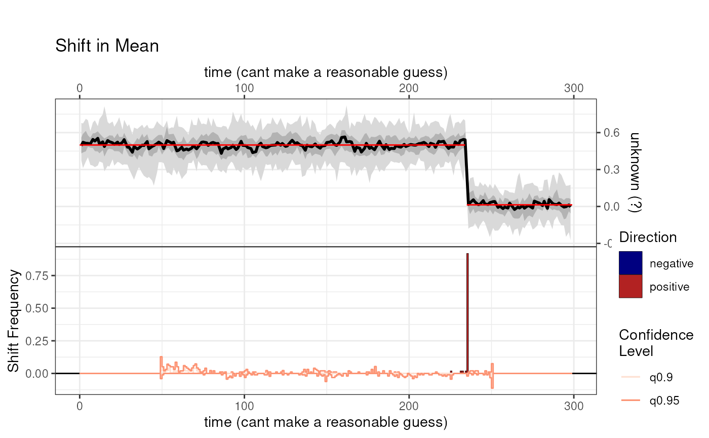
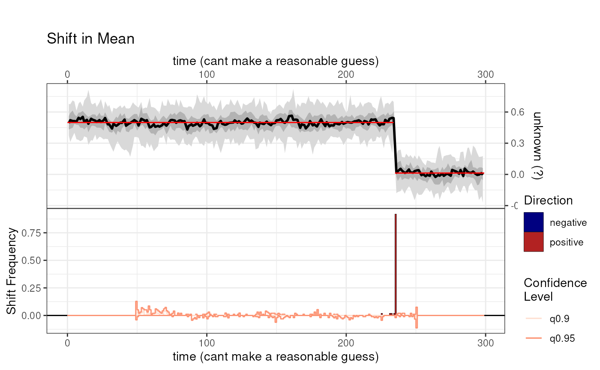

makeShift
makeShift.Rmd
library(actR)Build a synthetic time series with a shift in mean
The time series will have 100 time steps, with a shift in mean at time 20
The mean shift will have a magnitude of 0.5
syntheticTransition <- makeShift(length = 100, amp=0.5, start = 20)
#> timeUnits is at least partially absent in the input data
#> timeVariableName is at least partially absent in the input data
#> paleoData_units is at least partially absent in the input data
#> paleoData_variableName is at least partially absent in the input data
#> Detect Shift
we will test the synthetic time series with
detectShift
msGb <- detectShift(syntheticTransition,
time.variable.name = "year",
null.hypothesis.n = 50,
summary.bin.step = 1,
minimum.segment.length = 50,
simulate.time.uncertainty = FALSE,
method = "AMOC",
cpt.fun = changepoint::cpt.mean,
paleo.uncertainty = 0.1,
n.ens = 50)
#> Testing null hypothesis with 50 simulations, each with 50 ensemble members.
#>
#> Testing null hypothesis ■■■■■■■ 20% | ETA: 8s
#> Testing null hypothesis ■■■■■■■■■■■■■■■■ 50% | ETA: 5s
#> Testing null hypothesis ■■■■■■■■■■■■■■■■■■■■■■■■■■ 82% | ETA: 2s
#> Testing null hypothesis ■■■■■ 14% | ETA: 8s
#> Testing null hypothesis ■■■■■■■■■■■■■■■ 46% | ETA: 5s
#> Testing null hypothesis ■■■■■■■■■■■■■■■■■■■■■■■■ 78% | ETA: 2s###Plot shift
Let’s plot the results
plot(msGb) 
